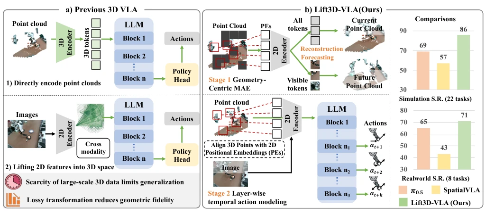
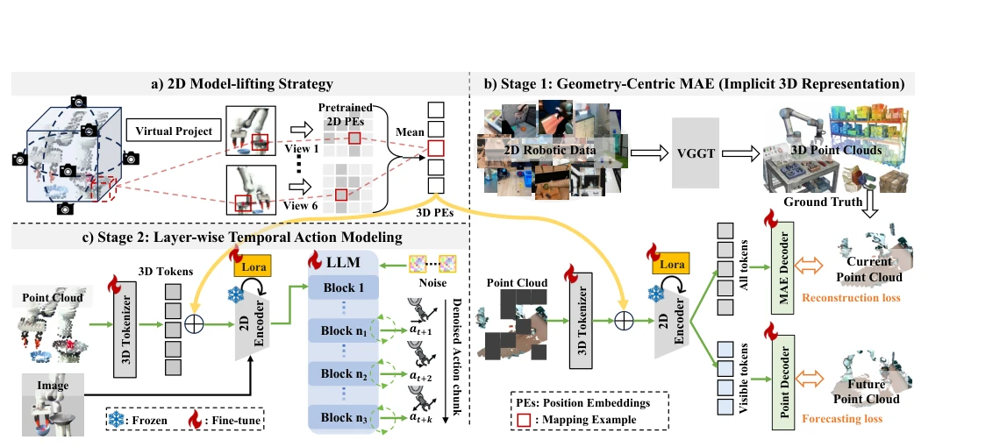
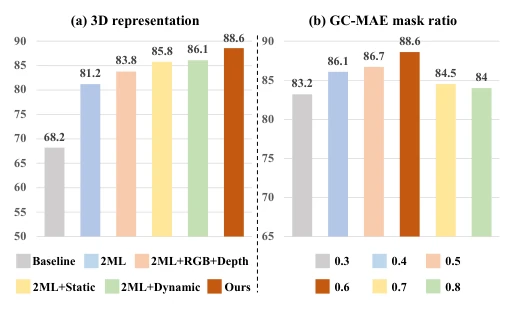
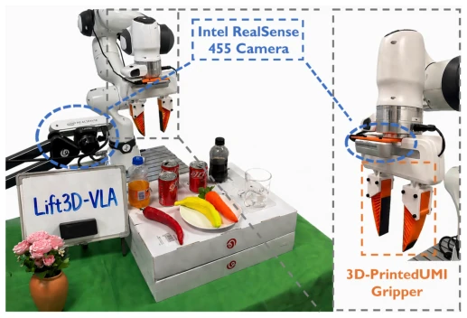
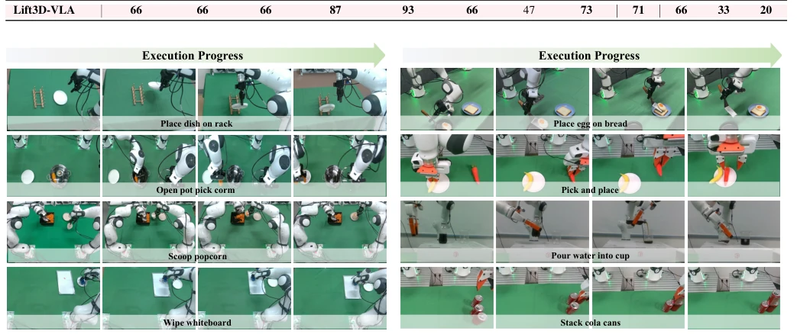
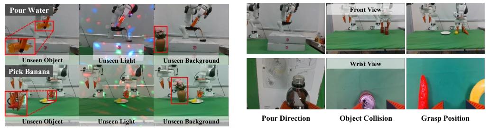
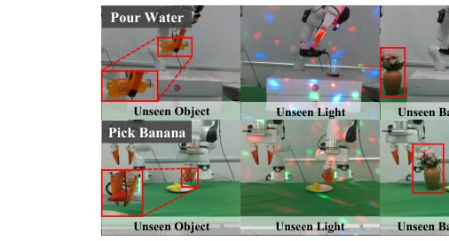

This Lift3D-VLA essentially forcibly equips the VLA model with a pair of "3D glasses". The authors are clever, avoiding training a 3D backbone from scratch, instead projecting point clouds onto virtual planes to reuse 2D position encodings, saving data but risking distortion. GC-MAE adopts a "current reconstruction + future prediction" dual objective, attempting to enable the 2D encoder to understand physical dynamics; this approach is quite risky, as it relies on VGGT synthetic point clouds. Hierarchical action modeling is a highlight, utilizing LLM intermediate layers to predict action steps, offering more coherence than simply outputting from the final layer. However, is the geometric accuracy of synthetic data sufficient? Real-world experiments cover only 8 tasks, and generalization claims seem somewhat overstated, given the limited OOD test scenarios. Overall, it represents a clever engineering integration; theoretical depth remains to be observed. However, in the absence of large-scale 3D data, this 2D enhancement strategy that effectively revives 2D capabilities is indeed worth learning from, though one should not expect it to solve all long-horizon planning challenges.
研究动机Motivation
VLA 模型虽泛化强，但缺乏物理世界的空间推理能力 [2]。现有 3D VLA 主要分两类：一是直接编码点云/体素，但缺乏大规模 3D 预训练数据，泛化难 [9-16]；二是跨模态转换，如 2D 特征升维或 3D 投影，但信息损失严重，破坏几何保真度 [5, 17-20]。我们之前的 Lift3D [1] 虽复用 2D 先验，但仅通过隐式掩码重建 RGB/深度，未显式约束 3D 结构，且无法联合建模几何演化与时间一致动作。在动态环境中，机器人需理解场景几何随时间变化并生成连贯动作，现有方法难以兼顾，导致长程任务表现脆弱。因此，亟需一种能显式编码 3D 点云并捕捉物理动态的 VLA 框架。
Although VLA models have strong generalization, they lack spatial reasoning capabilities in the physical world [2]. Existing 3D VLA models are mainly divided into two categories: first, directly encoding point clouds/voxels, but lacking large-scale 3D pretraining data, making generalization difficult [9-16]; second, cross-modal conversion, such as 2D feature upscaling or 3D projection, but with severe information loss, compromising geometric fidelity [5, 17-20]. Our previous Lift3D [1], while reusing 2D priors, only reconstructs RGB/depth through implicit masking, without explicitly constraining 3D structure, and cannot jointly model geometry evolution and temporally consistent actions. In dynamic environments, robots need to understand scene geometry changes over time and generate coherent actions; existing methods struggle to balance both, leading to fragile performance on long-horizon tasks. Therefore, there is an urgent need for a VLA framework capable of explicitly encoding 3D point clouds and capturing physical dynamics.

Fig. 1: Overview. a) Unlike previous 3D VLA methods that encode point clouds either with newly introduced 3D encoders or by projecting features between 2D and 3D spaces, b) We propose Lift3D-VLA, equipping 2D VLA models with explicit 3D reasoning and temporally coherent action generation. First, following our prior work Lift3D [1], we align 3D points with 2D positional embeddings to enable direct point-cloud encoding. Building on this, in Stage 1 we introduce Geometry-Centric MAE, which reconstructs the present point cloud while predicting its future geometric evolution, enhancing 3D representations. In Stage 2, we further propose layer-wise temporal action modeling, leveraging multiple layers of the LLM to produce temporally consistent actions. Across 22 simulated and 8 real-world tasks,
The overall framework is divided into two stages. First, adopt a 2D model enhancement strategy, projecting 3D point clouds onto multiple virtual planes, aligning the front view using camera extrinsics, reusing pretrained 2D Position Encodings (PEs), enabling the 2D encoder to directly process point cloud tokens, minimizing spatial information loss. Second, propose Geometric Center Masked Autoencoder (GC-MAE), utilizing VGGT to synthesize large-scale point cloud data, designing a dual-branch decoder: static branch reconstructs current point clouds, dynamic branch predicts future geometry evolution, jointly optimized via Chamfer Distance, forcing the encoder to internalize 3D structure and physical dynamics. Finally, introduce hierarchical temporal action modeling, not relying on an independent policy head, but utilizing sequence representations from LLM intermediate to deep layers, assigning different layers to predict continuous steps within action blocks, capturing temporal dependencies, and generating spatiotemporally consistent action sequences. During training, GC-MAE self-supervised pretraining is performed first, followed by freezing the encoder for SFT fine-tuning.

Fig. 2: Lift3D-VLA Framework. a) Following our previous work Lift3D, we perform virtual projection to align 3D points with pretrained 2D positional embeddings (PEs), thereby constructing geometry-aligned 3D PEs that enable the 2D vision encoder in VLA models to directly process point cloud inputs. b) Stage 1. To enhance 3D physical representations, we first leverage VGGT to synthesize 3D point clouds from large-scale robotic data, which serve as self-supervised training targets. We then introduce Geometry-Centric MAE, a framework that reconstructs the current point cloud while simultaneously predicting its future geometric evolution, enabling the model to capture physical dynamics in addition to static spatial structure. c) Stage 2. Building on the strengthened 3D representations, we furth
Evaluated on MetaWorld (22 tasks) and RLBench (8 tasks) simulation environments, as well as 8 real-world single/dual-arm tasks. Baselines include OpenVLA, π0.5, SpatialVLA, etc. In simulation, Lift3D-VLA improved average success rates by 10.8% and 11.1% over the best VLA on MetaWorld and RLBench respectively, with real-world baseline improvement of 4%. Ablation studies show that the 2D model enhancement strategy and the static/dynamic branches of GC-MAE both significantly contribute to performance. In hierarchical action modeling, selecting deep LLM layers at uniform intervals yields the best results. Generalization tests indicate the model has strong adaptability to unseen objects, lighting, and backgrounds. However, real-world experiments involve fewer tasks, and reliance on synthetic point cloud quality may limit performance in complex physical interactions.

Fig. 3: Ablation Studies. (a) Impact of the 2D model-lifting strategy and GC-MAE on 3D representation. (b) Effect of the mask ratio in GC-MAE. All experiments are conducted in the MetaWorld single-task setting.

Fig. 4: Real-world experimental robot platform. We employ a Franka Research 3 arm equipped with an Intel RealSense D455 RGB-D camera.
其他图片Other Figures

Fig. 5: Visualization. We illustrate the execution progress of all real-world task execution.

Fig. 7: Failure case visualization in real-world tasks. The top row shows the Front View, and the bottom row shows the corresponding Wrist View.

Fig. 6: Generalization. We evaluate the model under three OOD conditions: Unseen Object, Unseen Light, and Unseen Background. Red boxes highlight the changed conditions.